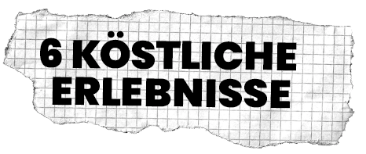

festival
Am 15. Oktober 2023 feiert Vevey die aktuellen Trends in den Bereichen
urbane Kunst und Musik und bringt eine Gemeinschaft von Gleichgesinnten
zusammen.
Unsere Veranstaltung bietet eine Vielzahl von Aktivitäten für die
Besucher, darunter professionell durchgeführte Skateboard-Vorführungen,
interaktive Graffiti-Workshops, Ausstellungen innovativer urbaner
Kunstwerke und musikalische Darbietungen lokaler und internationaler
Künstler.
Unser Ziel ist es, einen Raum zu schaffen, in dem sich Straßenkünstler
und Liebhaber der urbanen Kultur treffen, ihr Können und ihre
Leidenschaft für urbane Kunst teilen und in eine einzigartige urbane
Atmosphäre eintauchen können.
Unser Festival bietet auch eine Auswahl an Imbissständen. Imbissstände,
die authentische Straßenküche anbieten, um die Besucher zu verwöhnen.
Geschmacksknospen der Besucher.
street art
09h00-11h00
Freie Sitzungen.
10h00-12h00
Interaktiver Graffiti-Workshop mit 8DeadRats.
13h30-17h00
Demo von Manos68 und Freie Sitzungen.
Wir freuen uns sehr, unseren Ehrengast für das Street Jam Festival, den
berühmten Graffiti-Künstler 8DeadRats, vorstellen zu können.
Der aus Freiburg stammende 8DeadRats begann im Alter von 14
Jahren mit Spraydosen zu experimentieren und hat sich seitdem einen
internationalen Ruf für seinen einzigartigen und ausdrucksstarken Stil
geschaffen. Seine Arbeiten werden von der Hip-Hop-Kultur, der Street
Culture und der zeitgenössischen urbanen Kunst beeinflusst und zeichnen
sich oft durch leuchtende Farben, organische Formen und auffallende
Details aus.
8DeadRats ist eine Schlüsselfigur der Graffiti-Szene und seine
Arbeiten wurden in Ausstellungen auf der ganzen Welt gezeigt. Neben
seiner Arbeit als Graffiti-Künstler ist er auch ein Mentor für die
junge Generation von Stadtkünstlern, veranstaltet Workshops und teilt
seine Erfahrungen mit der Community.
Wir fühlen uns geehrt, 8DeadRats als Ehrengast bei unserem
jährlichen Stadtfestival begrüßen zu dürfen, und freuen uns darauf,
sein Talent bei unserem interaktiven Graffiti-Workshop in Aktion zu
sehen. Die Teilnehmer werden die Gelegenheit haben, direkt von ihm zu
lernen, seinen kreativen Prozess kennenzulernen und sich von seinen
einzigartigen Arbeiten inspirieren zu lassen.
8DeadRats im Jahr 2023, Foto von Noé Schüler.
skateboard
09h00-10h00
Anmeldung und Begrüßung der Teilnehmer.
10h00-10h30
Skateboard-Demo von Profis.
10h30-11h30
Skateboarding-Einführungsworkshop für Anfänger.
11h30-12h30
Freie Skateboard-Session für die Teilnehmer.
12h30-13h30
Pause.
13h30-14h00
Skateboard-Wettbewerb "Bester Trick" für Teilnehmer/innen.
14h00-15h00
Freie Skateboard-Session für die Teilnehmer.
15h00-15h30
Skateboard-Demo von Profis.
15h30-16h30
Skateboard-Workshop "Street Style" für erfahrene Skateboarder.
16h30-17h00
Preisverleihung für den Wettbewerb "Beste Figur".
17h00
Ende des Tages.
*Bitte beachten Sie, dass die Zeitangaben nur Richtwerte sind und Änderungen unterliegen können. Die Teilnehmer werden bei der Anmeldung zur Veranstaltung über die endgültigen Zeiten informiert.
musik
15h00-17h00
Urbaner Musikworkshop für Beatmaking- und Rap-Fans.
17h00-23h00
Hip-Hop-Konzert mit lokalen und nationalen Künstlern.
00h00
Ende des Tages.
street food

Unser Festival bietet Ihnen den ganzen Tag über eine Vielzahl von
Essensständen vor Ort. Sie können unter anderem entdecken :
Oh my b!
Ein Schnellimbisswagen, der handgemachte
Burger mit frischen Zutaten aus der Region anbietet.
Con cilantro wey
Ein Stand, an dem Tacos und Burritos mit gegrilltem Fleisch oder
vegetarisch mit Guacamole, Salsa und scharfen Soßen angeboten
werden.
Frankie's Hot Dogs
Einen Stand, an dem traditionelle Hotdogs mit verschiedenen Belägen und
frischen, knusprigen Pommes frites angeboten werden.
Poke Paradise
Ein Stand, an dem hawaiianische Poke-Schalen mit frischem Fisch, Reis,
Gemüse, Obst und schmackhaften Soßen angeboten werden.
La Bretagne ambulante
Einen Stand, an dem süße und herzhafte Crêpes und Waffeln mit
verschiedenen Füllungen wie frischem Obst, Nutella, Käse, Eiern und
Gemüse angeboten werden.
Smoothies Stop
Einen Stand, an dem frische Smoothies und Säfte mit originellen und
gesunden Geschmacksmischungen für eine erfrischende Pause angeboten
werden.